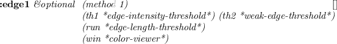

Subsections
viewingオブジェクトは、viewing座標系を処理する。
この座標系の原点は仮想カメラの位置に置かれる。
-z軸方向がオブジェクトの視線方向で、xy平面が投影画面である。
viewingがcascaded-coordsクラスを継承するので、
:translateや:rotateや:transformのような
座標変換メッセージを受け付ける。
また、cascaded-coordsから得られる他のオブジェクトを張り付けることができる。
したがって、移動物体上のカメラシステムのシミュレーションができる。
viewingの主な目的は、ワールド座標系で表現されるベクトルを
カメラ座標系に変換することである。
変換は、一般の座標変換に対して逆方向で与えられる。
このローカル座標系内のベクトルはワールド座標系における表現に変換される。
したがって、viewingはviewcoordsスロットに逆変換された左手系変換を持つ。
このスロットは、viewing座標系として普通参照される。
Figure 13:
viewing座標系と投影画面
|
|
viewing [クラス]
:super cascaded-coords
:slots (viewcoords)
-
- viewing変換を定義する。
:viewpoint [メソッド]
-
-
このviewingの原点のベクトル位置を返す。
:view-direction [メソッド]
-
-
viewingの原点から画面の中心までのベクトルを返す。
これは、viewing座標系のz軸方向である。
:view-up [メソッド]
-
-
ワールド座標系におけるこのviewingのy軸ベクトルを返す。
y軸は、viewportの上方である。
:view-right [メソッド]
-
-
ワールド座標系におけるこのviewingのx軸ベクトルを返す。
x軸は、viewportの水平右方向である。
:look from &optional (to #f(0 0 0)) [メソッド]
-
-
:lookは、その目がfromに位置されており、toの位置を
見ているとしてviewing座標系を設定する。
:init &key :target #f(0 0 0) [メソッド]
:view-direction nil
:view-up #f(0.0 0.0 1.0))
:view-right nil
&allow-other-keys
-
- viewingは、cascaded-coordsを継承するので、:posや:rotや:euler
や:rpyなどの:initのパラメータはすべてviewing座標系の位置や姿勢を
指定することに使用できる。
しかしながら、viewingの:initは回転を決定する簡単な方法を持っている。
もし、:targetだけが与えられたとき、視線方向は視点からtarget位置
の方向に決定され、:view-rightベクトルはワールド座標系のxy平面に平行な
x軸に決定される。
:view-directionを:targetの代わりに指定しても同じ様な
効果を得られる。
もし、:view-upまたは:view-rightパラメータを:targetあるいは
:view-directionに加えて指定するならば、3つの回転パラメータをすべて
自分自身で決定することができる。
parallel-projectionとperspective-projectionクラスは、
投影変換を処理する。この変換は4X4の行列で表現される。すなわち、変換は
3次元の同次座標系で与えられる。
projectionクラスは、両方のクラスの抽象クラスである。
これらの投影クラスは、viewingクラスを継承しているので、
2つの座標変換（ワールド座標からviewing座標系への変換と投影変換）を
同時に実行することができる。
3Dベクトルと:project3メッセージを投影オブジェクトに送ることにより、
4要素の実数ベクトル返す。
homo2normal関数は、この同次ベクトルを標準のベクトル表現に変換
するために使用される。
その結果は、標準デバイス座標系(NDC)と呼ばれる座標系上に表現される
ベクトルである。
その中で、見えるベクトルはそれぞれのx,y,z次元において-1から1までの
範囲で表される。
ロボット世界の本当のカメラをシミュレートするために、
perspective-projectionはparallel-projectionよりも多く使用される。
perspective-projectionは、定義されているパラメータが少し多い。
screenxとscreenyは、見える物体が投影されるviewing平面の上のwindowの大きさで、
大きな画面と広い空間が投影される。
viewdistanceは、視点とview平面との距離を定義しているが、
視角にも関係する。
viewdistanceを大きくすると、view平面のwindowに狭い範囲が投影される。
hitherとyonパラメータは、クリップする平面の前面と後面の距離を
定義する。
これら2つの平面の外側に位置するオブジェクトは、クリップから除外される。
実際に、このクリップ処理はviewportオブジェクトによって実現されている。
projection [クラス]
:super viewing
:slots (screenx screeny hither yon projection-matrix)
-
- 4x4行列であらわされる投影変換を定義する。
:projection &optional pmat [メソッド]
-
-
もし、pmatが与えられたならば、
projection-matrixのスロットに設定する。
:projectionは、現在の4x4投影行列を返す。
:project vec [メソッド]
-
-
vecは、4要素を持つ3次元同次ベクトルである。
vecは、投影行列により変換される。
そして、変換された結果である同次表現が返される。
:project3 vec [メソッド]
-
-
vecは、標準の3Dベクトル。
vecは、投影行列により同次化され変換される。
そして、変換された結果である同次表現が返される。
:view vec [メソッド]
-
-
vecにviewing変換と投影変換を連続的に適用する。
そして、変換された結果である同次表現が返される。
:screen xsize (&optional (ysize xsize)) [メソッド]
-
-
viewing画面の大きさを変える。
大きくすると、広いviewが得られる。
:hither depth-to-front-clip-plane [メソッド]
-
-
視点からクリップ前面までの距離を決定する。
このクリップ前面よりも前にあるオブジェクトはクリップから除外される。
:yon depth-to-back-clip-plane [メソッド]
-
-
視点からクリップ後面までの距離を変える。
このクリップ後面よりも後ろにあるオブジェクトはクリップから除外される。
:aspect &oiptional ratio [メソッド]
-
-
アスペクト比は、screen-yとscreen-xとの比である。
もし、ratioが与えられたならば、
アスペクト比は変えられ、screen-yはscreen-x * ratioに設定される。
:aspectは、現在のアスペクト比を返す。
:init &key :hither 100.0 [メソッド]
:yon 1000.0
:aspect 1.0
:screen 100.0
:screen-x screen
:screen-y (* screen-x aspect)
&allow-other-keys
-
- viewingとprojectionを初期化する。
parallel-viewing [クラス]
:super projection
:slots ()
-
- 平行投影を定義する。
hid(陰線消去関数)は平行投影では扱うことが出来ない。
:make-projection [メソッド]
-
-
perspective-viewing [クラス]
:super projection
:slots (viewdistance)
-
- 透視投影変換を定義する。
:make-projection [メソッド]
-
-
:ray u v [メソッド]
-
-
視点から正規化画面の上にある(u,v)への単位方向ベクトルを返す。
:viewdistance &optional vd [メソッド]
-
-
viewdistanceは、視点から画面迄の距離である。
もし、vdが与えられたならば、viewdistanceに設定される。
viewdistanceは、カメラの焦点距離と一致する。
vdを大きくすれば、ズームアップされたviewを得ることができる。
:viewdistanceは、現在のviewdistanceを返す。
:view-angle &optional ang [メソッド]
-
-
画面の対角線を見込む角度がangラジアンであるように画面の大きさを設定する。
20度(約0.4ラジアン)から50度(約0.9ラジアン)までの角度が自然な透視view
を生成することができる。
角度を大きくすると歪んだviewを生成する。
そして、狭くすると直角(平行)viewingのような平坦なviewが生成される。
:view-angleは、現在の視角あるいは新しい視角をラジアンで返す。
:zoom &optional scale [メソッド]
-
-
もし、scaleが与えられたならば、画面はscaleによって
現在の大きさを相対的に変化させる（viewdistanceは変化しない）。
もし、scaleに0.5を与えるならば、以前のviewより2倍広いviewを得られる。
:zoomは、新しい視角をラジアンで返す。
:lookaround alfa beta [メソッド]
-
-
視点を移動し回転させる。
回転中心は、視線の上でhither平面とyon平面の中間点
に与えられる。
viewing座標系は、ワールド座標系のz軸回りにalfaラジアン回転し、
ローカル座標系のx軸回りにbetaラジアン回転される。
:lookaroundは、viewingの中心にあるオブジェクト回りに視線を
動かすことができる。
:look-body bodies [メソッド]
-
-
視線、画面の大きさおよびhither/yonをすべてのbodiesに適合するviewport
となるよう変える。視点は変化しない。
視線は、すべてのbodiesのbounding boxの中心を通る視線から選択される。
:init &key (:viewdistance 100.0) &allow-other-keys [メソッド]
-
-
viewportクラスは、正規デバイス座標系(NDC)の中の3次元viewportのクリップ
を実行する。そして、デバイスに依存する座標系に結果を作る。
viewportは、画面上の見える四角領域の境界表現である。
viewportの物理的な大きさ（x軸とy軸方向のドット数）は、
:initメッセージの中の:widthと:heightとの引き数
で与えられなければならない。
:xcenterと:ycenter引き数は、viewportの物理的な位置を決定する。
画面の原点からのそれぞれの次元が絶対的に与えられているテクトロニクス4014
のような基本的なディスプレイデバイスを使っているとき、これら2つのパラメータは、実際に画面の上にオブジェクトを描く位置を決定する。
もし、位置が親windowから相対的に決まるXwindowのような精巧なディスプレイ
デバイスを使っているなら、
viewportを動かすためにviewportのパラメータを変える必要はない。
なぜなら、これらのパラメータは、実際のディスプレイ位置に依存しないからである。。
viewportクラスは、四角領域の左下をviewportの原点と仮定している。
そして、y軸は上方向に伸びているとする。
しかし、多くのwindowシステムやディスプレイデバイスでは原点を左上とし、
y軸が下方向に伸びているとしている。
この問題を回避するために、:heightパラメータに負の値を与えればよい。
homo-viewport-clip v1 v2 [関数]
-
-
v1とv2は、4要素を持つ同次ベクトルであって、
3次元空間の線分として表現される。
その線分は、
の境界でクリップされる。
そして、2つのベクトルのリストを返す。
もし、その線分がviewportの外側に完全に置かれているならば、
NILを返す。
viewport [クラス]
:super coordinates
:slots
-
- viewport変換は、デバイスで指定される座標系にNDC（正規化デバイス座標系）を作る。
coordinatesクラスを継承しているため、viewportはサイズと投影画面の
相対位置を定義している。
:xcenter &optional xcenter [メソッド]
-
-
このviewportのx軸の中心を返す。
もし、xcenterが与えられていれば、設定を行う。
:ycenter &optional ycenter [メソッド]
-
-
このviewportのy軸の中心を返す。
:size &optional size [メソッド]
-
-
このviewportのx軸とy軸方向の大きさのリストを返す。
:width &optional width [メソッド]
-
- このviewportの幅をwidthに
設定する。
:height &optional height [メソッド]
-
- このviewportの高さを
heightに設定する。
:screen-point-to-ndc p [メソッド]
-
-
pは、物理的画面の中の位置を表現する実数ベクトルである。
pは、正規化デバイス座標系(NDC)の中での表現に変換される。
:ndc-point-to-screen p [メソッド]
-
-
このviewportのNDC表現であるpを画面の物理的位置に変換する。
:ndc-line-to-screen p1 p2 &optional (do-clip t) [メソッド]
-
-
2つの3次元ベクトルp1とp2は、NDCの中の線分を定義する。
これらの2つの端点は、画面空間の表現に変換される。
もし、do-clipがnon-NILなら、その線分はクリップされる。
:init &key (:xcenter 100) (:ycenter 100) (:size 100)
(width 100) (height 100) [メソッド]
-
- 新しいviewportオブジェクトを作る。
画面の上に描画するためには、4つのオブジェクトが必要である。
1つは描かれたオブジェクト、2つはviewing座標系と投影で定義されるviewing、
3つはNDCの中でのクリップ処理のためのviewportとNDCから物理的画面座標系への
変換、4つは
物理的ディスプレイデバイスの上に描画関数を実行するviewsurface。
viewerオブジェクトは、viewingとviewportとviewsurface
オブジェクトを持ち、
座標系変換を連続的に制御する。
15.5節に記述されるdrawとhid関数はviewerの
インスタンスを使用する。
viewer [クラス]
:super object
:slots (eye :type viewint)
(port :type viewport)
(surface :type viewsurface)
-
- viewingからviewportを経由してviewsurfaceへ移るCascaded Coordinatesの変換を定義する。
:viewing &rest msg [メソッド]
-
-
もし、msgが与えられたならば、msgはviewing(eye)オブジェクト
に送られる。そうでなければ、viewing(eye)オブジェクトが返される。
:viewport &rest msg [メソッド]
-
-
もし、msgが与えられたならば、msgはviewport(port)オブジェクト
に送られる。そうでなければ、viewport(port)オブジェクトが返される。
:viewsurface &rest msg [メソッド]
-
-
もし、msgが与えられたならば、msgはviewsurface(surface)オブジェクト
に送られる。そうでなければ、viewsurface(surface)オブジェクトが返される。
:adjust-viewport [メソッド]
-
-
viewsurfaceの大きさが変えられたとき、:adjust-viewportは
portに固有のメッセージを送ることによりviewportの変換を変える。
:resize width height [メソッド]
-
-
viewsurfaceに:resizeメッセージを送り、viewportに:sizeメッセージを送る
ことによりviewsurfaceの大きさを変える。
:draw-line-ndc p1 p2 &optional (do-clip t) [メソッド]
-
-
NDCの中に定義される2つの端点p1,p2を結ぶ線を描く。
:draw-polyline-ndc polylines &optional color [メソッド]
-
-
NDCの中に定義される端点を結ぶ多角形を描く。
:draw-star-ndc center &optional (size 0.01) color [メソッド]
-
-
NDCの中に十字マークを描く。
:draw-box-ndc low-left up-right &optional color [メソッド]
-
-
NDCの中に四角形を描く。
:draw-arc-ndc point width height angle1 angle2 &optional color [メソッド]
-
-
NDCの中に円弧を描く。
このviewerに結び付くviewsurfaceオブジェクトは、:arcメッセージを
受けなければならない。
:draw-fill-arc-ndc point width height angle1 angle2 &optional color [メソッド]
-
-
NDCの中に塗り潰し円弧を描く。
:draw-string-ndc position string &optional color [メソッド]
-
-
NDCの中に定義されるpositionにstringを描く。
:draw-image-string-ndc position string &optional color [メソッド]
-
-
:draw-rectangle-ndc position width height &optional color [メソッド]
-
-
:draw-fill-rectangle-ndc point width height &optional color [メソッド]
-
-
:draw-line p1 p2 &optional (do-clip t) [メソッド]
-
-
ワールド座標系に定義される2つの端点p1,p2を結ぶ線を描く。
:draw-star position &optional (size 0.01) color [メソッド]
-
-
ワールド座標系のposition位置に十字マークを描く。
:draw-polyline vlist &optional color [メソッド]
-
-
ワールド座標系のvlist端点を結ぶ多角形を描く。
:draw-box center &optional (size 0.01) [メソッド]
-
-
ワールド座標系のcenterに四角形を描く。
:draw-arrow p1 p2 [メソッド]
-
-
p1からp2へ向けての矢印を描く。
:draw-edge edge [メソッド]
-
-
:draw-edge-image edge-image [メソッド]
-
-
:draw-faces face-list &optional (normal-clip nil) [メソッド]
-
-
:draw-body body &optional (normal-clip nil) [メソッド]
-
-
:draw-axis coordinates &optional size [メソッド]
-
-
coordinatesで定義される軸をsizeの長さで描く。
:draw &rest things [メソッド]
-
-
3次元の幾何学オブジェクトを描く。
もし、オブジェクトが3次元ベクトルならば、その位置に小さな十字マークを描く。
もし、3次元ベクトルのリストであれば、多角形を描く。
もし、thingが:drawメッセージを受けたならば、
このviewerを引き数としてそのメソッドが呼び出される。
もし、オブジェクトが:drawnersメソッドを定義しているならば、
:drawメッセージは:drawnersの結果に送られる。
line, edge, polygon, faceおよびbodyオブジェクトは、
viewerに定義されている:draw-xxx(xxxにそのオブジェクトのクラス名が入る)
メソッドによって描かれる。
:erase &rest things [メソッド]
-
-
背景色でthingsを描く。
:init &key :viewing :viewport :viewsurface [メソッド]
-
-
viewing, viewportおよびviewsurfaceをこのviewerのスロット
eye, portとsurfaceに設定する。
view &key (:size 500) (:width size) (:height size)[関数]
(:x 100) (:y 100)
(:title "eusx")
(:border-width 3)
(:background 0)
(:viewpoint #f(300 200 100)) (:target #f(0 0 0))
(:viewdistance 5.0) (:hither 100.0) (:yon 10000.0)
(:screen 1.0) (:screen-x screen) (:screen-y screen)
(:xcenter 500) (:ycenter 400)
-
- 新しいviewerを作り、*viewer*リストに置く。
描画
draw [viewer] &rest thing [関数]
-
-
viewerにthingを描く。
thingは、座標系、立体、面、エッジ、ベクトル、2つのベクトルのリストのどれでも可能である。
(progn (view) (draw (make-cube 10 20 30)))
は、xwindowに立方体を描く。
draw-axis [viewer] [size] &rest thing [関数]
-
-
viewerの中にthingの座標系の軸をsizeの長さで描く。
thingは、座標系から得られるどのオブジェクトでも可能である。
draw-arrow p1 p2 [関数]
-
-
*viewer*にp1からp2に向かう矢印を描く。
hid [viewer] &rest thing [関数]
-
- viewerに陰線処理された画像を描く。
thingは、faceまたはbodyが可能である。
hidd [viewer] &rest thing [関数]
-
-
陰線を点線で描くことを除いて、hidと同じである。
hid2 body-list viewing [関数]
-
-
edge-imageオブジェクトで表現される陰線処理画像を生成する。
その結果は*hid*に置かれる。
render &key :bodies :faces (:viewer *viewer*) [関数]
(:lights *light-sources*)
(colormap *render-colormap*) (y 1.0)
-
- bodiesとfacesにレイトレーシングを行い、陰面消去した画像を生成する。
viewing, viewportおよびviewsurfaceは、viewerから得られる。
lightsは、light-source（光源）オブジェクトのリストである。
colormapは、Xwindowのcolormapオブジェクトである。
それぞれのbodiesとfacesは、割り当てられるカラー属性を
持たなければならない。
colormapに定義されているカラーLUTの名前を:colorメッセージで
送ることによりカラー属性を設定できる。
一般にこの関数は、Xlib環境下でのみ働く。
demo/renderdemo.lのサンプルプログラムを見ること。
make-light-source pos &optional (intensity 1.0) [関数]
-
-
posの位置に光源オブジェクトを作る。
intensityは、デフォルトの光の強さを増す拡大比である。
もっと正確に強さを決定するためには、光源の:intensityメソッドを
使用する。
tektro file &rest forms [マクロ]
-
-
*tektro-port*ストリームのためにfileをオープンし、
formsを評価する。
これは、tektro描画の出力を直接fileに書き込むために使用される。
kdraw file &rest forms [マクロ]
-
-
kdrawは、kdrawまたはidrawで読み込めるポストスクリプトファイルを
生成するためのマクロ命令である。
kdrawは、:outputモードでfileをオープンし、
*viewer*を置き換えるためのkdraw-viewsurfaceとviewportを
作り、formsを評価する。
それぞれのformsは、drawやhidのような描画関数の
どれかを呼び出す。
これらのformsからの描画メッセージは、kdraw-viewsurfaceに
直接出力される。この出力はidrawやkdrawで認識できる
ポストスクリプト表現にメッセージを変換する。
そして、fileに蓄積する。
idrawまたはkdrawが呼び出されfileがオープンされたとき、
EusViewer windowに書いたものと同一の図形を見ることができる。
その図形は、idrawの機能で変更することができる。
そして、最終描画はepsfile環境を用いることによりLATEXドキュメント
に組み込むことができる。
この機能は、"llib/kdraw.l"のファイルに記述されている。
pictdraw file &rest forms [マクロ]
-
-
pictdrawは、MacintoshのPICTフォーマットで画像ファイルを
生成するためのマクロである。
pictdrawは、fileを:outputモードでオープンし、
pictdraw-viewsurfaceを作り、*viewer*のviewportに置き換え、
formsを評価する。
formsは、それぞれdrawあるいはhidのような描画関数のどれかを
呼び出すものである。
これらの書式からの描画メッセージは、kdraw-viewsurfaceに
直接出力された後、PICTフォーマットへのメッセージに変換され,
fileへ蓄積される。
このPICTフォーマットは、Macintoshのmacdrawやteachtextで
認識することができる。
hls2rgb hue lightness saturation &optional (range 255) [関数]
-
-
HLS(Hue, Lightness, Saturation)で表現される色を、RGB表現に変換する。
HLSは、しばしばHSLとして参照される。
hueは、rainbow circle(0から360)の色で表現される。
0が赤で45が黄で120が緑で240が青で270が紫そして360が再び赤となる。
lightnessは、0.0から0.1の値を持ち、黒から白までの明るさを表現する。
lightnessが0のときは、hueやsaturationにかかわらず
黒となる。そして、lightnessが1のときは、白となる。
saturationは、0.0から1.0までの値を持ち、色の強さを表現する。
saturationの値が大きいと鮮明な色調を生成し、小さい値は弱く濁った色調
を生成する。
rangeは、RGB値の限界を示す。
もし、それぞれの色に8ビットの値が割り当てられているカラーディスプレイ
を使っているならば、rangeは255とすべきである。
もし、RGBに16ビットの整数が仮想的に割り当てられているXwindowを使って
いるならば、rangeは65536とすべきである。
HSVとHLSとの違いに注意すること。
HLSでは、鮮明な(rainbow)色はlightness=0.5で定義されている。
rgb2hls red green blue &optional (range 255) [関数]
-
-
RGBの色表現を、HLS表現に変換する。
アニメーション
EusLispのアニメーションは、グラフィックアクセラレータを持たない
普通のワークステーション上での擬似リアルタイムグラフィックス機能を備えている。
その基本的な考え方は、長い時間かかって生成された1連の画像を高速に
再表示することである。
画像は2つの方法で保存される。
1つは、完全なピクセル画像を持つたくさんのXwindow pixmapを保存する。
もう1つは、陰線処理で得られる線分データを保存する。
前者は、高速で陰面処理された画像を表示するための方法であるが、
長いアニメーションではたくさんのメモリーをX serverに要求するため
適さない。
後者は、メモリーが少なくて済み、データをディスクに蓄積するのに適する。
しかし、線分の数が増加したならば、性能を悪化させる。
他の方法として、描かれるオブジェクトの構成を得て、
*viewer*に描画を生成する関数をユーザーが作ることもできる。
pixmap-animationは、count引数で指定された数と同じ回数この関数を呼び出す。
それぞれの呼び出し後、Xwindowと仮定されるviewsurfaceの内容は、
新しく作られたXwindow pixmapにコピーされる。
これらのpixmapは、playback-pixmapで再表示される。
同様に、hid-lines-animationはhidの結果から見える線分を抜き出し、
リストに蓄積する。
そのリストは、playback-hid-linesによって再表示される。
以下に示す関数は、"llib/animation.l"に定義されており、
"llib/animdemo.l"の中にはETA3 マニピュレータのモデルに関して
hid-lines-animationを用いたアニメーションの
サンプルプログラムを含んでいる。
pixmap-animation count &rest forms [マクロ]
-
-
formsは、count回評価される。
それぞれの評価後、*viewsurface*の内容は新しいpixmapにコピーされる。
count枚のpixmapのリストが、返される。
playback-pixmaps pixmaps &optional (surf *viewsurface*) [関数]
-
-
pixmapsリストのなかのpixmapはそれぞれ、
surfに連続的にコピーされる。
hid-lines-animation count &rest forms [マクロ]
-
-
hidへの呼び出しを含むformsがcount回評価される。
それぞれの評価後、*hid*が持つhidの結果は検索され、
見える線分は2点一組のリストの形で集められる。
count長さのリストが返される。
playback-hid-lines lines &optional (view *viewer*) [関数]
-
-
linesは、2点一組のリストである。
viewの上に線分を連続的に描く。
他のpixmapを割り当てるときにフリッカーフリーアニメーションを生成するために
2重バッファ技法が使用される。
list-visible-segments hid-result [関数]
-
-
hid-resultのedge画像のリストから見える線分を集める。
Travis CI User
2017-03-07
![\includegraphics[height=10cm]{fig/viewcoords.ps}](jmanual-img99.png)